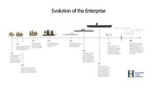
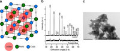
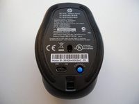
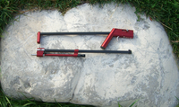
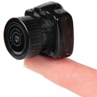
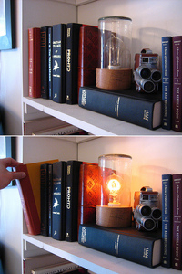

AMD te venderá memoria RAM
Sun, 27 Nov 2011 18:55:45 GMT
Hace anos que el mercado de las memorias para PC y ordenadores está copada por grandes empresas del sector sin mucho cambio en el mercado más allá de la lógica evolución de la tecnología y la progresiva bajada de precios. … Sigue leyendo →
Hace anos que el mercado de las memorias para PC y ordenadores está copada por grandes empresas del sector sin mucho cambio en el mercado más allá de la lógica evolución de la tecnología y la progresiva bajada de precios.
Pues parece que ahora AMD va a comercializar su propia memoria RAM.
Dicha memoria se comercializará en tres verisones distintas: Entertainment, con una frecuencia de reloj de 1333 MHz, Performance, con un reloj entre 1333 y 1600 MHz y Radeon Edition con un frecuencia superior de 1866 MHz todas de tipo DDR3.
Se verán en el mercado en el CES 2012 en packs de 2, 4 y 8 GB para todas sus verisones de rendimiento. No parece que se vaya a tratar de memoria de alta calidad y bajo precio ya que se trata de una marca con mucha fama y además si sacase un producto realmente competitivo eso empeoraría sus relaciones con los otros fabricantes de memoria con los que trabaja actualmente. [Icronic]
Internet a 120 GB/s [No MB, GB]
Sun, 27 Nov 2011 17:02:28 GMT
He de decir que soy un afortunado al poder navegar desde el sofá de mi casa a 100 MB/s ya que en este país esto de la banda ancha real no está muy extendida que digamos. Pero Suecia van un … Sigue leyendo →
He de decir que soy un afortunado al poder navegar desde el sofá de mi casa a 100 MB/s ya que en este país esto de la banda ancha real no está muy extendida que digamos. Pero Suecia van un paso más allá.
En las partys, esas concentraciones de usuarios de ordenadores en las que se dedican a jugar en red, descargar de todo y ver porno, básicamente lo sé, yo he estado en más de una las operadoras aprovechan para marcar récords en velocidades de acceso a Internet. Pero los suecos están hechos de otra pasta. ¿Qué harán con 120 GB/s de conexión con la red?
A mi no se me ocurre nada pero seguro que ellos saben qué hacer, que son muy listos. La Party DreamHack se trata de la más grande del mundo y se celebra en suecia. Durante esa feria Cisco y Telia, uno de los ISP nacionales del país van a proveer a la red de la feria de 120 gigabits por segundo, y es que hacía falta escribirlo con letras.
Su intención es marcar un nuevo récord Guinness pero para ello tienen que coordinar a los usuarios de dicha red para hacer uso de su máxima capacidad al mismo tiempo. Son 75.000 personas y su intención es ponerse a descargar hasta llegar a dicha cifra: 120 G.
¿Llegará aquí algún día? [Dreamhack]
Un PC en un pen-drive [Minimalismo]
Sun, 27 Nov 2011 15:06:51 GMT
Está claro que en los tiempos que corren hasta el reloj de pulsera que llevas puesto tiene más potencia de cálculo que el Commodore 64 con el que empezaste a trastear hace 20 años. Y esto lo han llevado hasta … Sigue leyendo →
Está claro que en los tiempos que corren hasta el reloj de pulsera que llevas puesto tiene más potencia de cálculo que el Commodore 64 con el que empezaste a trastear hace 20 años.
Y esto lo han llevado hasta el extremo creando un dispositivo tipo pen-drive con un conector USB en un extremo y un HDMI en el otro para convertir cualquier pantalla, incluso la TV, en un ordenador all in one.
Lo bueno es que ambos conectores, tanto el USB como el HDMI proveen de alimentación a los dispositivos donde los conectes y de ello se han aprovechado para alimentar este micro-PC. Y no se queda corto en cuanto a prestaciones ya que equipa un procesador de doble núcleo ARM de 1,2 GHz junto con WiFi, Bluetooth y un lector de tarjetas SD que hace las veces de disco duro.

Con estas características es capaz incluso de reproducir vídeo en alta definición a 1080p sin inmutarse pero sin duda su principal logro es el poder tener un ordenador básico con conectividad a internet allá donde estés. Sin duda algo interesante para casa o incluso para gente que viaje demasiado. [TechZork]
La evolución del Enterprise: del navío del Siglo XVIII a la nave estelar del Capitán Kirk
Sat, 26 Nov 2011 12:24:21 GMT
Cuando hablamos del USS Enterprise nos viene rápidamente a la cabeza esa imagen de los intrépidos exploradores del espacio vestidos con skijamas de colores, capitaneados por el carismático capitán James T.Kirk con la ayuda del inefable Spock su oficial de … Sigue leyendo →

Cuando hablamos del USS Enterprise nos viene rápidamente a la cabeza esa imagen de los intrépidos exploradores del espacio vestidos con skijamas de colores, capitaneados por el carismático capitán James T.Kirk con la ayuda del inefable Spock su oficial de orejas puntiagudas. Estamos hablando propiamente del USS Enterprise NCC-1701. Si somos algo más jovenzuelos igual nos recuerda alguna de las naves estelares posteriores a esta que protagonizaron las sucesivas entregas de la serie Star Trek.
¿Pero sabías que la saga del Enterprise empieza en el Siglo XVIII con un navío de madera y grandes velas? En esta infografía podemos ver la línea temporal que une todos estos Enterprise (aquí para ver la imagen expandida).
Hace poco se cumplió el 50 aniversario del USS Enterprise CVN-65, el primer porta-aeronaves de la marina de los estados unidos con tecnología nuclear. Todavía hoy en activo, el CVN-65 sigue siendo con 343 metros el barco más largo de la marina del todo el mundo, aunque existen otros navíos de carga bastante más grandes.
Gene Roddenberry, el creador de la saga galáctica de TV Star Trek, se inspiró directamente en este súper portaaviones para dar nombre a la primera nave estelar de su serie, que a la postre gozaría de mucho éxito y múltiples versiones posteriores (y algunas películas en la gran pantalla).
El navío anterior a este pionero de la propulsión nuclear fue el USS Enterprise CV-6, precisamente el buque de guerra más condecorado de la marina de los Estados Unidos y uno de los barcos claves en la batalla de Midway. Pero para encontrar el primer USS Enterprise hemos de remontarnos al año 1775, o sea que la saga viene ya de tres siglos atrás. Después varias goletas, navíos con decenas de cañones por banda, los mencionados portaaeronaves y hasta el trasbordador de la NASA de tan célebre diseño, etc. hasta llegar al NCC-1701 que si nada se tuerce se construirá entre el año 2243 y el 2245 para el disfrute de Kirk y sus subordinados. Lo vemos todos bien claro ¿No?
La autora de la imagen del encabezado es Huntington Ingalls Industries, una compañía de construcción naviera que se ocupa de la creación y mantenimiento de los buques nucleares y no nucleares de la Marina de los EEUU, y que además trabaja también para la Guardia Costera estadounidense. ─ [Huntington Ingalls Industries]
Truco casi mágico: crea tu monitor de “privacidad total”
Sat, 26 Nov 2011 06:55:02 GMT
¿Estás cansado de que te espíen mientras estás en el ordenador? Esa sensación de que alguien otea por encima de tus hombros para ver qué es lo que aparece en tu pantalla, notar esa insistente curiosidad que te perfora la … Sigue leyendo →
Pinche aquí para ver el vídeo
¿Estás cansado de que te espíen mientras estás en el ordenador? Esa sensación de que alguien otea por encima de tus hombros para ver qué es lo que aparece en tu pantalla, notar esa insistente curiosidad que te perfora la nuca… ¡Qué cotilla es la gente!
Pues ahora podrás dejar de piedra a todos estos curiosos con este ingenioso truco. Si tienes a mano un monitor LCD que no te importe destripar, con unos pequeños consejos y un poco de habilidad electrónica lo podrás convertir en una pantalla de “privacidad total”, en la que solo tú con tus gafas especiales podrás ver lo que aparece o escribes en ella.
En la página de Instructables encontrarás todo el proceso desmenuzado y explicado paso a paso. En un resumen rápido se trata de abrir el monitor desarmando su estructura de plástico, y después cortar con un cuchillo o cúter y con mucho cuidado la película polarizada, retirando la parte adhesiva del panel de vidrio. Hay también que utilizar en un momento del proceso un diluyente de pintura, aguarrás, acetona o similar, y una parte de lo extraído del monitor deberemos aplicarlo después en unas gafas, etc. Todo queda bien explicado en la página de referencia.

El “truco mágico” viene después cuando, una vez hayamos montado de nuevo el LCD, y equipados con unas simples gafas 3D customizadas (de esas que te entregan en los cines), podamos ver lo que aparece en el monitor mientras el resto del mundo solo percibe una pantalla totalmente en blanco. Curioso, ¿Verdad?
Más de uno deseará aplicarlo rápidamente al ordenador de su oficina, y dejar así pasmado al elemento ese tan cotilla y chismoso que todos tenemos en el trabajo. Quizá no sea lo último en tecnología de encriptación ni medidas antiespionaje, ¡Pero como solución para aumentar tu privacidad en el uso de la computadora resulta muy ingeniosa! ─ [Übergizmo e Instructables]
Sony podría lanzar la PS4 para competir con la futura X-Box
Fri, 25 Nov 2011 18:55:35 GMT
La compañía Sony sigue muy de cerca los rumores sobre una nueva consola de Microsoft. En su ánimo, hacer coincidir el lanzamiento de la futura X-Box con la presentación de una PlayStation 4. Así lo ha manifestado Jim Ryan, presidente … Sigue leyendo →
La compañía Sony sigue muy de cerca los rumores sobre una nueva consola de Microsoft.
En su ánimo, hacer coincidir el lanzamiento de la futura X-Box con la presentación de una PlayStation 4. Así lo ha manifestado Jim Ryan, presidente de PlayStation Europa, para quien “no sería deseable lanzar una consola mucho más tarde que una nueva X-Box.
En Sony no le quieren dar ningún margen de ventaja a Microsoft, al menos en el terreno de las consolas.
Aunque por el momento no demuestran tener mucha prisa por desarrollar una heredera de la PS3, lo cierto es que los japoneses no quieren dejar que Microsoft se tome la delantera y no le van a dejar sacar una nueva X-Box sin tener una PlayStation a rebufo.
La buena noticia es que en enero Microsoft podría anunciar una nueva consola, probablemente en el marco de la feria CES, así que estemos atentos porque tendríamos dos por el precio de uno. [Eurogamerr]
Chips analógicos para simular el funcionamiento del cerebro
Fri, 25 Nov 2011 18:01:50 GMT
Se suele decir que el cerebro humano es más complejo que cualquier ordenador que exista, y no es para menos con sus 100.000 millones de neuronas. Pero lo que hace al cerebro realmente potente es su plasticidad, es decir, su … Sigue leyendo →
Se suele decir que el cerebro humano es más complejo que cualquier ordenador que exista, y no es para menos con sus 100.000 millones de neuronas. Pero lo que hace al cerebro realmente potente es su plasticidad, es decir, su habilidad para adaptarse a la nueva información.
Siguiendo este modelo biológico, científicos del MIT han desarrollado un chip de silicio analógico que simula al cerebro y cambia neuronas, sinapsis y neurotransmisores por transistores, circuitos y corriente eléctrica variable.
Con esta pauta, ahora la corriente eléctrica variable hace que los 400 transistores que actúan como las canales de iones de las “neuronas postsinápticas” cambien y se adapten.
Se consigue por tanto un comportamiento muy similar al de las neuronas, por lo que se puede utilizar para simular funciones neuronales y por tanto ayudar en la investigación de nuestro propio cerebro.
De hecho el sistema funciona más rápido que los modelo tanto biológico como el tradicional computacional, por lo que puede que nuestro futuros dueños robóticos puedan basarse en esta tecnología.
Aunque yo creo que hasta que no nos pongan un USB en la cabeza para poder descargarnos en nuestra mente las series y películas, el mundo está abocado a que sigamos teniendo jornadas maratonianas televisivas en vez de hacer cosas útiles para la humanidad. [Gizmag]
El 30 de noviembre Spotify sorprenderá al mundo
Fri, 25 Nov 2011 17:19:15 GMT
El día es el 30 de noviembre. La sorpresa viene de la mano de Spotify, quien ha convocado un evento en el que anunciará algo muy importante de lo que no ha facilitado más información. Convertido durante un tiempo en … Sigue leyendo →
El día es el 30 de noviembre. La sorpresa viene de la mano de Spotify, quien ha convocado un evento en el que anunciará algo muy importante de lo que no ha facilitado más información.
Convertido durante un tiempo en uno de los servicios más populares mediante los que disfrutar de música en streaming Spotify lucha ahora por mantenerse en una posición preeminente dentro de un sector dinámico con una evolución constante.
“What’s next for Spotify?” (¿Qué es lo próximo para Spotify?) es el lema que presidirá la semana que viene el evento en el que Spotify nos presentará desde Nueva York… ah, esa es la cuestión, qué servicio protagonizará el acto.
Daniel Ek, CEO de la compañía, no estará solo, se habla de la presencia de invitados lo que supondría terceras partes implicadas. Los indicios hacen suponer que lo que nos presentarán será una nueva tienda de música online que competiría con las iTunes y Market de Apple y Google.
El hecho de que Spotify sea un viejo conocido en el Viejo Continente y que la presentación se realice en la Gran Manzana apuntaría en la dirección de una presentación global de los servicios premios de pago de Spotify.
Escúpele a tu móvil para saber si estás enfermo
Fri, 25 Nov 2011 14:32:56 GMT
Ya han aparecido varias noticias sobre prometedores sensores que podremos conectar al móvil para tener diversos tipos de análisis en el momento usando todo tipo de fluidos corporales. Pero un equipo de científicos coreanos cree que estos sensores no serían … Sigue leyendo →
Ya han aparecido varias noticias sobre prometedores sensores que podremos conectar al móvil para tener diversos tipos de análisis en el momento usando todo tipo de fluidos corporales.
Pero un equipo de científicos coreanos cree que estos sensores no serían necesarios para muchos de estos análisis, ya que la pantalla capacitiva de los móviles actuales podría usarse como un sensor de alta precisión para analizar nuestra saliva.
Sí, habéis leído bien, los científicos del Instituto Avanzado de Ciencia y Tecnología de Corea quieren que escupamos en nuestras pantallas para analizarnos.
Esto que en principio parece una guarrada podría ser un gran avance, ya que permitiría prácticamente a cualquier persona hacerse un análisis bastante completo con un simple gesto y sin necesidad de sensores especiales, tan sólo una aplicación específica.
Aunque tampoco creáis que podría detectarlo todo, pero por ahora ya han conseguido que pueda analizar la concentración de bacterias de las clamidias, y creen que podrían adaptar la tecnología para otras muchas enfermedades y síntomas.
La pena es que no hayan conseguido analizar el sudor de los dedos, lo que sería menos asquerosillo, pero bueno, basta con pensar que en realidad es líquido limpiacristales y que estás limpiando la pantalla. Aunque si antes has comido ganchitos, chocolate o chorizo lo mismo parecerá que has aplicado un filtro colorante. [New Scientist]
Los electrodos de nanopartículas podrían hacer que en el futuro cercano nos “enchufemos a pilas”
Fri, 25 Nov 2011 13:04:16 GMT
Quédate con este nombre, hexacianoferrato de cobre. ¿Complicado? Puede, pero gracias a él las energías renovables a larga escala tienen un aliado muy importante, ya que gracias a los cátodos fabricados con este material se podrían crear baterías baratas y … Sigue leyendo →

Quédate con este nombre, hexacianoferrato de cobre. ¿Complicado? Puede, pero gracias a él las energías renovables a larga escala tienen un aliado muy importante, ya que gracias a los cátodos fabricados con este material se podrían crear baterías baratas y con una increíble vida útil que las haría adecuadas para el uso como parte de la red eléctrica.
Si hasta ahora enchufábamos las baterías a la red eléctrica puede que en un futuro bastante cercano veamos casi lo contrario, baterías masivas que almacenen energía eléctrica obtenida de manera renovable y a las que se enchufe la red.
La culpa de todo esto la tiene el hexacianoferrato de cobre, que en unas pruebas realizadas por la Universidad de Stanford ha resultado un excelente candidato para la creación de cátodos en baterías enormes.
La estructura de los cristales permiten que iones de potasio hidratado puedan moverse libremente sin dañarlo, ofreciendo un 80% de su capacidad tras 40.000 ciclos de carga y descarga, y que además se realizan mucho más rápido gracias a que las partículas del material tienen sólo unos 100 átomos.
Según sus creadores esto supone baterías con una vida útil de unos 30 años. No servirán de mucho para pequeños dispositivos, pero si tendrán una grandísima utilidad para el tendido eléctrico.
El único problema es que ahora tienen que encontrar un material diferente para el ánodo, y aunque han encontrado algunos siguen buscando uno tan fácilmente fabricable a larga escala como el hexacianoferrato de cobre. [Nature Communications]
ExoPC, la ordenadormesa multitáctil con la que reemplazarás la que tienes de IKEA
Fri, 25 Nov 2011 11:40:39 GMT
¿Una mesa que a la vez es una pantalla multitáctil? Eso me suena, de hecho aparte de Microsoft con Surface, numerosas empresas pequeñas y proyectos DIY crearon la suya propia con un coste muchísimo menor. Pero ahora que las cosas … Sigue leyendo →
Pinche aquí para ver el vídeo
¿Una mesa que a la vez es una pantalla multitáctil? Eso me suena, de hecho aparte de Microsoft con Surface, numerosas empresas pequeñas y proyectos DIY crearon la suya propia con un coste muchísimo menor.
Pero ahora que las cosas han cambiado y las tablets nos han multitoqueteado nuestro concepto de como interactuar con los ordenadores, puede que estos sistemas tengan más sentido que nunca. ExoPC es un claro ejemplo de un producto que resulta muy interesante.
A pesar de que no dan muchos detalles, lo cierto es que el vídeo resulta espectacular gracias a su pantalla de 40″ 1080p. Pero lo mejor es su precio, ya que al contrario que otros sistemas estamos hablando de un producto completo y listo para usarse por 1.300 dólares, menos de la sexta parte del coste de la Samsung SUR40 por ejemplo.
Lo único que nos queda claro es que al igual que las tablets ExoPC, utilizará EXO UI, un interfaz que funciona sobre Windows 7 pero que cambia radicalmente la experiencia del usuario.
Al parecer podremos verlo en directo en el CES 2012, al que le queda ya muy poquito, y se espera que se comercialice de aquí a unos meses.
Así que sí estás planteándote cambiarte de mesa de escritorio puede que esta sea una gran opción para renovarla, eso sí, no te recomiendo para nada usar un compás o dejar que tu hij@ o sobrin@ la utilice como apoyo para troquelar. [ExoPC]
Probamos el ratón WiFi de HP: sin cables, sin conectores, sin ocupar puertos USB
Fri, 25 Nov 2011 10:47:56 GMT
La industria del ratón ha sido capaz de generar infinitos modelos. En todos los tamaños, formas, colores… con cable, sin cable… dentro de estos los hay con tecnología de radiofrecuencia o con Bluetooth. HP ha abierto una nueva vía con un … Sigue leyendo →
La industria del ratón ha sido capaz de generar infinitos modelos.
En todos los tamaños, formas, colores… con cable, sin cable… dentro de estos los hay con tecnología de radiofrecuencia o con Bluetooth. HP ha abierto una nueva vía con un modelo que emplea la tecnología Wi-Fi para la comunicación inalámbrica con el ordenador. Su nombre lo dice todo, HP Wi-Fi Mobile Mouse.
Olvídate de cables y de ocupar puertos USB y aprovecha que casi siempre suele uno trabajar con el WiFi encendido. A continuación te ofrecemos los resultados de la prueba que hemos podido realizar estos días en Gizmodo de uno de ellos. Y aún hay más.
El ratón WiFI de HP es de tamaño medio, acorde con la necesidad de que no ocupe demasiado espacio en el maletín o la bolsa de transporte del portátil, que es para lo que principalmente está ideado.
El hecho de emplear tecnología WiFI para conectarse con el ordenador facilita la no ocupación de puertos USB con los conectores de radiofrecuencia o Bluetooth, aprovechando así que la mayoría de las veces se trabaja con ese tipo de conectividad activada. De esta forma con el ratón en su embalaje no viene con ningún tipo de conector o accesorio. Encontrarás el ratón, las instrucciones, la garantía y un mini CD con el programa de configuración que debes instalar.
Precisamente la mayor complicación que hemos encontrado en el ratón WiFi de HP es conseguir que se entienda con algunos equipos. Es obligatorio haber instalado previamente el software que lo acompaña denominado HP Wi-Fi Mobile Mouse Monitor y el problema es que si tienes un ordenador que carece de lector de CD (cualquier netbook) necesitarás otro equipo donde sí puedas introducir el miniCD, pasar la suite de HP a un pendrive y conectarlo a tu ordendor.
Te estarás preguntando si no es más sencillo bajarse dicho software de la web de HP… pues eso, que no es tan sencillo localizarlo.

Y una vez instalado dicho software el emparejamiento ha resultado ser caprichoso… como sucede a veces con las personas, vaya. A pesar de que las instrucciones indican que basta con encender el ratón y presionar el botón CONNECT situado en la parte inferior del mismo (previa activación del WiFI en el ordenador, evidentemente) la mayoría de las veces se hace necesario acceder a la aplicación y activar desde ahí el reconocimiento.
El ratón se adapta perfectamente al hueco de la palma de la mano, con un apoyo firme y además, al tener una forma simétrica se utiliza con comodidad tanto por los diestros como por los zurdos.
Tiene cuatro botones y una rueda de desplazamiento central de movimiento muy suave par realizar scroll vertical. Todos los botones son programables. Además de los habituales derecho e izquierdo cuenta con otros dos laterales que quedan situados frente a dedo pulgar y el anular. Por defecto vienen configurados para avanzar y retroceder página pero a través del programa de configuración puedes asignarles otras funciones o cambiarlas de lado si eres zurdo, ya que de serie el ratón viene configurado para usuarios diestros.
El fabricante indica que la duración de las baterías (dos pilas AA) da para nueve meses de autonomía. Con respecto al ordenador con el que lo uses no debería consumir más recursos energéticos que los propios que ya emplea para mantener la conexión WiFi. La ventaja en este sentido con respecto a la tecnología Bluetooth, la radiofrecuencia o el uso de ratones por cable USB es que con el ratón WiFi de HP el ordenador no consume energía adicional.
Aprovechamos para recordarte que estos días en Gizmodo tenemos en marcha un concurso con el que puedes convertirte en periodista por un día, además de optar a suculentos premios. Te invitamos a que elabores un artículo parecido a este que acabas de leer sobre el ratón WiFi de HP y nos lo envíes. Aquí tienes toda la información del concurso.
Los Tamagotchi cumplen 15 años [Veredicto: ¿cuántos años llevas sin darle de comer y jugar con el tuyo?]
Thu, 24 Nov 2011 18:38:55 GMT
Tal día como ayer, 23 de noviembre, pero del año 1996 se presentaban en sociedad unos curiosos artilugios electrónicos con forma de huevo y una minúscula pantalla en la que un puñado de píxeles pretendían hacernos creer que en su … Sigue leyendo →
Tal día como ayer, 23 de noviembre, pero del año 1996 se presentaban en sociedad unos curiosos artilugios electrónicos con forma de huevo y una minúscula pantalla en la que un puñado de píxeles pretendían hacernos creer que en su interior habitaba una criatura.
Una criatura virtual que se llamaba Tamagotchi y que debíamos alimentar, educar, limpiarle las caquitas, jugar con ella… aquello se convirtió en una fiebre e incluso había madres que tenían que cuidar de los Tamagotchis de sus hijos mientras estos estaban en el colegio (los hijos, me refiero).
Algunos dicen que los Tamagotchi siguen entre nosotros, sólo que ahora se llaman móvil/tablet y los alimentamos con perfiles de redes sociales.
Aquella fiebre aún no ha remitido del todo, puesto que si buscas un poco hasta Amazon continúa vendiéndolos a unos 12€.
Años más tarde la criatura virtual a la que debemos educar, con la que debemos jugar y que merece nuestros desvelos habita en máquinas más modernas y tiene aspecto de perrito (Nintendogs) pero 15 años después todavía siguen en el fondo de nuestros cajones algunas de estas reliquias, nuestras primeras mascotas virtuales. ─[Wired]
El móvil de Facebook [Lo que iba a ser pero no fue]
Sun, 27 Nov 2011 18:07:14 GMT
Cada vez más teléfono integran la red social dentro de sus sistema operativo de fábrica. Pero las ideas de Mark Zuckerberg no acababan ahí y querían tener su propio terminal telefónico y además ofrecerlo gratis a los usuarios. La red … Sigue leyendo →

Cada vez más teléfono integran la red social dentro de sus sistema operativo de fábrica. Pero las ideas de Mark Zuckerberg no acababan ahí y querían tener su propio terminal telefónico y además ofrecerlo gratis a los usuarios.
La red social ya ha dicho que los usuarios móviles son el doble de activos que los fijos y eso, en cuestión de ingresos publicitarios es mucho decir.
Efectivamente el coste del terminal para el usuario final sería gratuito ya que la empresa pretendía recuperar el coste del teléfono con publicidad embebida dentro de el uso de la red desde estos dispositivos.
El sueño no acababa ahí ya que se pretendía que al adquirir el terminal el usuario no tuviera que firmar ningún contrato y eso en nuestro país sería toda una odisea. La cosa se torció al echar cuentas.
EL teléfono costaría en torno a 700 dólares, unos 525 euros. Un coste inadmisible para después regalar el producto. Así que la cosa quedó ahí. [Bussines Insider]
Búsqueda de imágenes intuitiva [Pero intuitiva de verdad]
Sun, 27 Nov 2011 16:03:21 GMT
Si alguna vez has dedicado tiempo a realizar búsquedas en Internet para tus trabajos de clase o para tu trabajo habrás experimentado que es realmente fácil encontrar textos o artículos referenciados con el tema de búsqueda. Pero con las imágenes … Sigue leyendo →
Si alguna vez has dedicado tiempo a realizar búsquedas en Internet para tus trabajos de clase o para tu trabajo habrás experimentado que es realmente fácil encontrar textos o artículos referenciados con el tema de búsqueda. Pero con las imágenes es otra cosa.
¿Cómo encontrar una foto de esos gatitos monísimos sin ver tres millones de presentaciones de diapositivas en tu bandeja de spam? Pues JPG.TO nos hecha una mano.
Se trata de la simplicidad llevada al extremo en la búsqueda de imágenes en la Red. Tal solo tenemos que poner la palabra de nuestra búsqueda antes de jpeg.to en nuestra dirección web y listo.
Nosotros hemos hecho la prueba con gizmodoes.jpeg.to y este es el resultado:
Fácil, sencillo y para toda la familia [jpeg.to]
R2-D2 se pasa al Snowboarding [Veredicto: un casco de una galaxia muy, muy lejana]
Sat, 26 Nov 2011 14:37:30 GMT
Siempre deseé bajar por las pistas nevadas a toda velocidad, realizando acrobáticos saltos con una plancha de Snowboarding mientras la gente me mira atónita desde el telesilla comentado “este insolente cabezudo acabará dándose un buen tortazo”. Ahora con este casco … Sigue leyendo →
Siempre deseé bajar por las pistas nevadas a toda velocidad, realizando acrobáticos saltos con una plancha de Snowboarding mientras la gente me mira atónita desde el telesilla comentado “este insolente cabezudo acabará dándose un buen tortazo”.
Ahora con este casco inspirado de manera genial en el más famoso droid del universo Star Wars, el pequeño R2-D2 (posiblemente el robot más reproducido en el mundo con el merchandising más variopinto), mi sueño puede que se haga al fin posible. Y si el tortazo finalmente también se hace realidad, las buenas prestaciones de seguridad del casco espero que me protejan lo suficiente como para no quedar alelado de por vida, dando zumbidos y pitidos estridentes mientras hablo con mi alto amigo imaginario de latón dorado.
El casco, del conocido fabricante de accesorios de Snowboarding y montaña Burton, tiene un precio de $99,95, y podéis encargarlo directamente en su tienda On-line. Los días fríos poco a poco van haciéndose mayoría y la temporada de nieve está casi a la esquina, ¿A qué esperáis para haceros con uno de estos geniales cascos? ¡Que la fuerza, y a poder ser también la buena nieve en polvo, os acompañe! ─ [Geekologie y Burton]
Chuck Norris se muda al mundo de World of Warcraft
Sat, 26 Nov 2011 09:34:57 GMT
A estas alturas, ¿Quién no ha oído hablar alguna vez de World of Warcraft (WoW)? El conocidísimo videojuego de rol masivo en línea de Blizzard que cada día engancha a más personas. Todos hemos tenido ese amigo o conocido que … Sigue leyendo →
Pinche aquí para ver el vídeo
A estas alturas, ¿Quién no ha oído hablar alguna vez de World of Warcraft (WoW)? El conocidísimo videojuego de rol masivo en línea de Blizzard que cada día engancha a más personas. Todos hemos tenido ese amigo o conocido que desapareció un día de nuestras vidas por completo, después de anunciar con una frase aparentemente inocente sus intenciones “¿Sabes?, me he decidido a probar eso que está de moda del WoW”.
Sí, la vida en Azeroth es dura y difícil, pues competir con los casi 11,5 millones de subscriptores y jugadores que Blizzard dice tener en sus servidores ha de ser algo complicado a la fuerza. Pero si existe en el ciberespacio un personaje duro y fuerte que nos puede llevar a grandes victorias ese es sin duda Chuck Norris, que ha decidido mudarse al mundo de WoW en el último spot comercial del videojuego.
Como promoción del juego me parece un gran acierto, excelente, aunque Blizzard ya había sido pionera en insólitos métodos propagandísticos. Este Chuck Norris cazador (uno de los roles que podemos adoptar en el mundo de WoW) ha de ser un temible enemigo para los orcos, elfos y demás contrincantes del juego, y si además le acompaña un minino de terribles fauces…
Seguro que la barba más dura y conocida de Oklahoma estará contento con este comercial. Su alter ego electrónico reparte estopa con un arte y gracia similar a la del implacable Ranger de Texas, y deberían incluirlo ya como raza propia en el juego, un personaje todopoderoso que solo fuera desbloqueable al llegar a las cotas más altas de puntuación en el nivel más difícil del juego. ─ [Laughingsquid y YouTube]
Fanático de la Tierra Media diseña su casa al más puro estilo Hobbit
Sat, 26 Nov 2011 06:07:26 GMT
El tema inmobiliario está últimamente de lo más complicado. A pesar de que la crisis ha dejado millares de pisos vacíos en manos de bancos e inmobiliarias en quiebra, acceder a uno de estos es más difícil que tratar las … Sigue leyendo →
El tema inmobiliario está últimamente de lo más complicado. A pesar de que la crisis ha dejado millares de pisos vacíos en manos de bancos e inmobiliarias en quiebra, acceder a uno de estos es más difícil que tratar las caries de un batallón de orcos. El protagonista de esta historia, Simon Dale, era una más de las muchísimas personas afectadas por este tema, pero él supo encontrar una solución muy original a sus problemas.
El Sr. Dale adquirió una pequeña parcela de tierra en una de las verdes colinas del País de Gales, y decidió que edificaría en ella algo mucho más original que un simple chalecito de dos plantas y jardín. Impulsado por su afición a las novelas de J.R.R.Tolkien decidió que construiría su hogar al más puro “estilo Hobbit”, y a juzgar por las fotografías la verdad es que la casita no le quedó nada mal. Más detalles e imágenes tras el salto.
¿Y por qué no podrá hacerse? Seguramente esta duda pasó en algún momento por la cabeza de Simon, que además no tenía ninguna experiencia en el mundo de la arquitectura ni la carpintería; pero con la ayuda de un suegro profesional de la construcción el curioso proyecto tiró adelante. Y lo mejor de todo es que según declara el protagonista las obras se prolongaron tan solo por 4 meses y se costearon con poco más de £3,000.
Este hogar de estilo “hobbitense” está perfectamente integrada en su entorno. La azotea está provista de una capa de balas de paja y para su correcto aislamiento está cubierta con láminas de plástico para que sea impermeable al agua. Por último, cuenta con una capa de tierra en la que crece la hierba verde camuflando todo el conjunto a la perfección. Además la casa también equipa un sanitario compostero, un frigorífico que se refrigera por el aire que proviene de debajo de los cimientos, paneles solares para la acumular energía, etc.
Todo el conjunto resulta de lo más original, y la familia Dale parece de lo más feliz y orgullosa de su casa de estilo Hobbit. Eso claro está, de momento; solo hasta que llegue el día en que Gandalf llame a su puerta y la cosa se complique enormemente. ─ [Nerdapproved]
El cerebro se reorganiza cuando vemos pelis de miedo
Fri, 25 Nov 2011 18:15:34 GMT
Tu cerebro cambia. Y uno de los catalizadores de ese cambio (y aquí viene la sorpresa) son las películas de miedo. Recientes investigaciones han demostrado que cuando vemos cine de terror nuestras redes neuronales sufren modificaciones. Una hormona llamada noradenalina … Sigue leyendo →
Tu cerebro cambia.
Y uno de los catalizadores de ese cambio (y aquí viene la sorpresa) son las películas de miedo. Recientes investigaciones han demostrado que cuando vemos cine de terror nuestras redes neuronales sufren modificaciones. Una hormona llamada noradenalina forma parte de las alteraciones neuroquímicas que se han detectado en un grupo de voluntarios que fueron observados mediante resonancia magnética mientras veían películas de terror.
La revista “Science” publica un artículo que demuestra que el cerebro reorganiza sus redes neuronales para dar respuesta al stress que sufre el espectador del cine de terror.
Existen áreas corticales y subcorticales del cerebro que se activan y aumentan su conectividad al presenciar una de estas películas, una reestructuración motivada por la acción del neurotransmisor noradrenalina.
Esta alteración química afecta a las redes neuronales en áreas que abarcan “regiones involucradas en la reorientación de la atención, el aumento de la vigilancia perceptual y el control automático neuroendocrino”, lo que implica que las escenas y películas de terror colocan a nuestro cerebro en un estado de alerta similar al que nos produciría una situación real de peligro. ─[El Mundo]
Zeo Sleep Manager controla tu sueño
Fri, 25 Nov 2011 17:43:05 GMT
No siempre se le dedica la importancia que merece al sueño. Y en ocasiones muchos problemas leves de salud podrían aliviarse con un sueño realmente reparador. La cuestión es ¿sabes si descansas realmente cuando duermes? Ahora con Zeo Sleep Manager … Sigue leyendo →
No siempre se le dedica la importancia que merece al sueño.
Y en ocasiones muchos problemas leves de salud podrían aliviarse con un sueño realmente reparador. La cuestión es ¿sabes si descansas realmente cuando duermes? Ahora con Zeo Sleep Manager podrás obtener una completísima información sobre las fases de tu sueño. Tan sencillo como colocarte el sensor y echarte a dormir. Por la mañana descargas la información y descubres si descansas o no.
Compatible con iOS y Android, Zeo Sleep Manager recoge información mediante un sensor que colocas en tu cabez al estilo de los pulsómetros con los que controlar el ritmo cardiaco cuando sales a correr.
La importancia de conocer tus patrones de sueño te permite saber si realmente alcanzas la fase REM y la de sueño profundo, en la que el organismo repone fuerzas y descansa de manera efectiva, así como saber nada más despertarte si estás lo suficientemente fresco como para afrontar el duro día con garantías o tendrás que echar mano de esa gran costumbre española, la siesta.
El sensor envía de manera inalámbrica la información recogida a tu móvil que te muestra un detallado informe de cómo ha sido tu sueño permitiendo la comparación con otras noches de manera que siempre sabrás qué noche no fue la más apropiada para reponer las fuerzas que necesitabas. Analizando tus patrones de sueño y sus fases podrás optimizar tu descanso y amanecer a un nuevo día pleno de fuerzas para salir a comerte el mundo.
Otra utilidad de Zeo es que gracias a su función SmartWake te despertará de forma suave en el momento más adecuado de tu ciclo de sueño. ─[MyZeo]
Rifle de medio kilo de peso con pinta de pertenecer a un asesino a sueldo
Fri, 25 Nov 2011 17:01:46 GMT
Cuando el hombre primitivo se convirtió en recolector nunca hubiera imaginado que su anterior método de subsistencia, la caza y la pesca, podrían algún día unirse en un único instrumento y que además este sería tan ligero. Este rifle pesa … Sigue leyendo →
Cuando el hombre primitivo se convirtió en recolector nunca hubiera imaginado que su anterior método de subsistencia, la caza y la pesca, podrían algún día unirse en un único instrumento y que además este sería tan ligero.
Este rifle pesa medio kilo escaso y además de ser desmontable puede transformarse en una caña de pescar. Algo tremendamente útil si te pierdes en el monte (para tener una dieta variada) y (no queremos dar ideas) por si eres un asesino a sueldo siempre puedes evitar a la policía que busque a un francotirador sentándote a pescar en algún riachuelo.
mn.
Utilizando munición del calibre 22 y con apenas un par de tubos, este invento es lo menos que despachan en rifles.

La idea es que puedas salir a la naturaleza y subsistir llevando encima la menor cantidad de impedimenta posible y al mismo tiempo buscar la versatilidad. De hecho con un par de modificaciones es posible que te sirva de muleta por si te tuerces un tobillo o incluso de puntal para la tienda de campaña.─[The Firearm Blog vía Neatorama]
Antivirus en Android ¿necesarios o timo?
Fri, 25 Nov 2011 13:52:23 GMT
Hace unos días, en el blog de Google+, Chris DiBona la lió parda acusando a los creadores de servicios antivirus para Android de que se aprovechaban del temor de los usuarios para venderles productos que no les hacían falta. Claro, … Sigue leyendo →
Hace unos días, en el blog de Google+, Chris DiBona la lió parda acusando a los creadores de servicios antivirus para Android de que se aprovechaban del temor de los usuarios para venderles productos que no les hacían falta.
Claro, estas palabras no sentaron muy bien y a lo largo de estos días diversos desarrolladores de este tipo de programas han criticado esta postura y ofrecido datos del problema del malware en Android. ¿Pero lejos de conceptos subjetivos defendiendo intereses propios, cuál es la realidad?
Todos hemos leído los “escándalos” de malware en Android, pero esto también ha ocurrido en iOS. En este debate sobre seguridad en dispositivos móviles se han mezclado conceptos como la vulnerabilidad del código abierto y el cerrado cuando lo realmente importante es la distribución de ese código.
La comunidad open source es más segura que insegura, y eso no tiene nada que ver con que el código, es simplemente por como es la sociedad y la mayor posibilidad de involucrar a más gente.
A pesar de todo lo que creamos la gente tiende a ser buena, por lo que por cada criminal dispuesto a fastidiar con su código veremos otros muchos más que lo hagan más seguro.
Un sistema cerrado sin embargo sólo dispone de los recursos propios de quien lo crea para defenderse, si son suficientes para lidiar con aquellos que quieran chulearlo bien, pero si no, no existe una comunidad que te apoye y ayude. Y lo que está claro es que no existe el código 100% seguro y más tarde o más temprano lo van a hacer.
De esta manera los problemas de seguridad son más difíciles de encontrar en un sistema cerrado, pero también son más complicados de solucionar. Por tanto no es la apertura del código, el problema principal es que la manera de conseguir aplicaciones para Android no es sólo Market, sino muchas más.
Esta descentralización absoluta y vorágine de markets de terceros junto con la facilidad de instalar aplicaciones descargadas de cualquier sitio hace que no se tenga el control y que fácilmente, si instalas lo que no debes, te chuleen el terminal. Pero esto sucede igualmente con iOS jailbreakeados y otros similares.
Con todo esto ¿es Android más inseguro que iOS, Symbian o WP7? Intrínsecamente como sistema operativo no, pero como sistema de distribución de software totalmente.
¿Son los antivirus para móviles necesarios? Si te alejas de los cauces oficiales de distribución de aplicaciones sin duda, además muchos de estos programas también incluyen extras que no vienen mal, como bloquear números no deseados, localizar móviles robados, encriptar datos, borrar a distancia…
Pero lo mejor como viene siempre es simplemente tener sentido común, la mayoría de los fallos de seguridad no vienen por un hacker superinteligente escondido en la fortaleza de un supervillano, sino por gente que se descarga chorradas o pulsa botones sin leer. [ITespresso]
Ésta es la cámara digital más pequeñica del mundo
Fri, 25 Nov 2011 12:11:33 GMT
Cuando te hablan de una cámara digital compacta probablemente no te imaginas algo como esto, se trata de la cámara más pequeña del mundo. Es de Hammacher Schlemmer y resulta alarmantemente bonica, a la par de diminuta. No es que … Sigue leyendo →

Cuando te hablan de una cámara digital compacta probablemente no te imaginas algo como esto, se trata de la cámara más pequeña del mundo. Es de Hammacher Schlemmer y resulta alarmantemente bonica, a la par de diminuta.
No es que ofrezca una calidad inigualable y su precio no se asemeja a sus dimensiones, como suele pasar, pero si te apetece tener esta curiosidad en tus dedos, te alegrará saber que ya está a la venta.
Cuenta con un sensor de 2MP y puede grabar fotos a 1600×1200 en JPEG y vídeo 640×480 a 30fps en AVI, nada mal para una cucada que sólo mide 28,5×25,4×27 milímetros y pesa poco más de 14 gramos.
Tiene también ranura microSD, incluyendo una tarjeta de 2GB, puerto microUSB para cargarla y conectarla a otros dispositivos, y una batería de una autonomía de 30 minutos que se carga en menos de una hora.
Ahora viene lo malo, cuesta 100 dólares, por lo que tu ilusión de comprarte cientos para llevar una distinta cada día a lo llavero y que las llaves abusen de ella o encontrártela como regalo en tu elegante y caro paquete de cereales o roscón de reyes se acaba de desvanecer a no ser que tengas una piscina de monedas de oro y seas un pato con chistera. [ohgizmo]
El truco del libro que abre la guarida secreta
Fri, 25 Nov 2011 11:31:01 GMT
Quién no ha querido tener alguna vez una estancia secreta, una guarida a la que sólo se accede por algún método secreto. Ese típico panel que se desliza desvelando nuestro escondite y que sólo se acciona si tiramos de un … Sigue leyendo →

Quién no ha querido tener alguna vez una estancia secreta, una guarida a la que sólo se accede por algún método secreto.
Ese típico panel que se desliza desvelando nuestro escondite y que sólo se acciona si tiramos de un libro, uno que sólo nosotros conocemos. No es tan complicado como crees, de hecho lo difícil es tener el escondite, pero hoy te enseñamos a instalar el sistema de apertura. Verás como es más sencillo de lo que pensabas y además es un mecanismo que puede tener otros muchos fines.
¿Conoces ese interruptor para lámparas que funciona tirando de un cordoncillo?
Pues así de complicado es el sistema para accionar la puerta de tu Batcueva o, si quieres, para encender una lámpara, un ventilador, el equipo de música o accionar la alarma. Algo tan sencillo como unir el extremo del cordoncillo de ese mecanismo a un libro.
Al tirar de la parte superior del libro, habiendo fijado el mecanismo a la balda, el cordoncillo tira del mecanismo y enciende/apaga aquello a lo que lo enchufes, que puede ser el mecanismo de apertura de la puerta secreta o una lámpara.
La precaución que deberás tomar es que el libro no resulte atractivo para los visitantes de tu casa, no sea que algún invitado quiera leerlo y abra accidentalmente la estancia en la que custodias tus más ocultos secretos. O que se empeñe en sacarlo de la estantería y del tirón salga el libro, el cordoncillo, el mecanismo, la lámpara a la que lo has conectado… ─[B.Lightdesign]
Robots boxeadores que se parten la cara contigo dentro bien protegido
Thu, 24 Nov 2011 19:01:06 GMT
Eso de pelearse está muy feo y además puede acabar mal. Incluso si ganas puede que te lleves un par de yoyas por parte de tu oponente y tu perfil griego se quedaría en una pinta barriobajera con la nariz … Sigue leyendo →
Eso de pelearse está muy feo y además puede acabar mal.
Incluso si ganas puede que te lleves un par de yoyas por parte de tu oponente y tu perfil griego se quedaría en una pinta barriobajera con la nariz achatada, casi podrían confundirte con una tertuliana televisiva vespertina y no es plan.
Por eso casi mejor meterse dentro de este híbrido de robot, boxeador, coche de choque y jaula y comenzar a soltar mandobles sobre tu oponente desde la seguridad de estar entre rejas. Para eso está el progreso, para que los robots (en este caso, robots boxeadores) hagan el trabajo sucio por nosotros.
No estamos hablando de ningún juguete.
Dentro de ese armazón enjaulado cabe perfectamente un ser humano de tamaño estándar dispuesto a partirse la cara (de hierro) con otro similar.
Con un peso de unos 500 kilos y una altura de casi 2 metros un ocupante de hasta 150 kilos de peso puede colocarse en el interior de la jaula y mediante una serie de palancas y botones controlar los movimientos de los brazos neumáticos del robot boxeador. Si el golpe atina a dar en la cabeza robotizada del oponente con la fuerza suficiente se anota un punto a su favor.
Un sistema de motores de Honda mueve las ruedas ocultas en la base de los robots boxeadores permitiéndoles desplazamientos de hasta 5 km/h, suficiente para bailar alrededor de tu oponente mientras canturreas, cual Mohammed Ali, aquello de “vuela como una mariposa, pica como una abeja, ¡pelea, chico, pelea!”. También te puedes sentir como la teniente Ripley enfrentándose contra la reina Alien.
Los contrincantes mecánicos (¿brutos mecánicos?) tienen baterías recargables de 12 voltios que proporcionan hasta 5 horas de diversión robopugilística mientras sudas y gritas y golpeas embutido en aluminio, fibra de vidrio, acero y tu propia testosterona. ─[Hammacher Schlemmer]